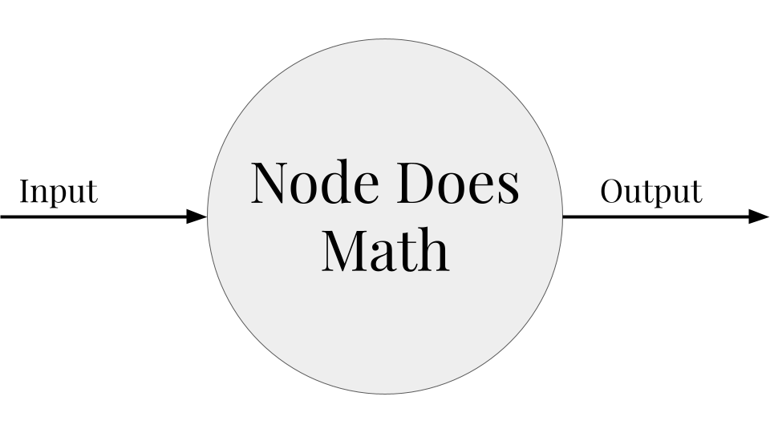
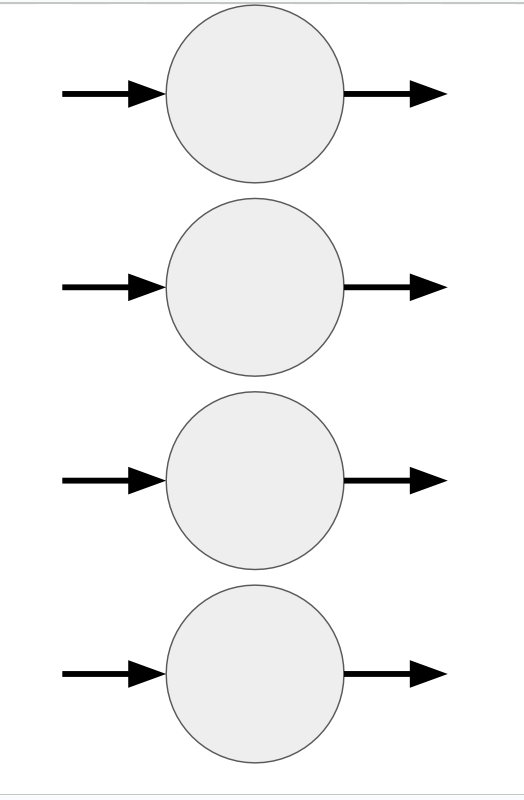
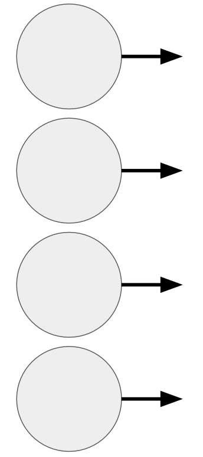
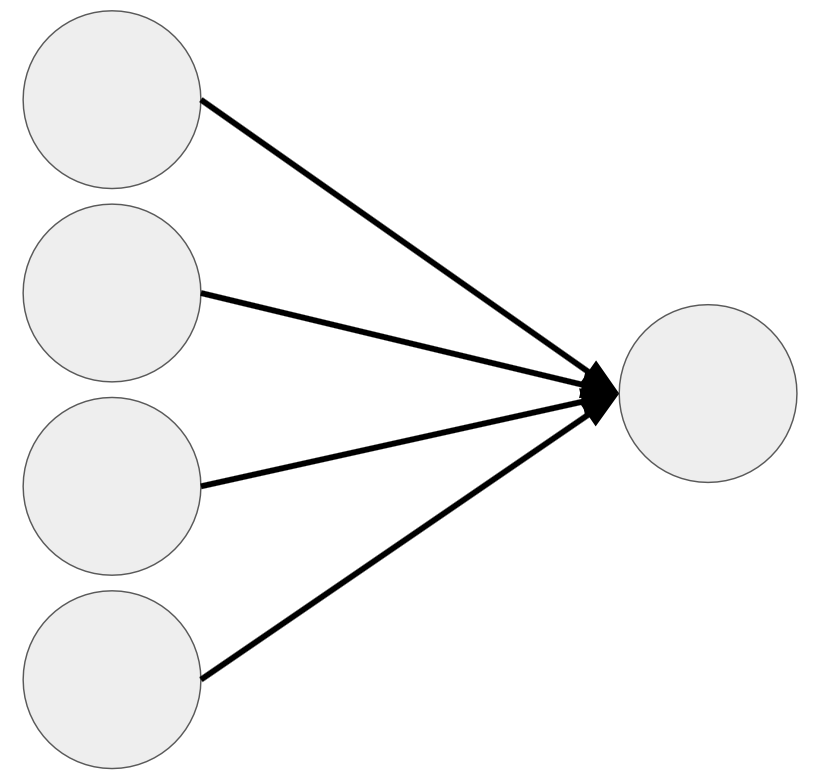
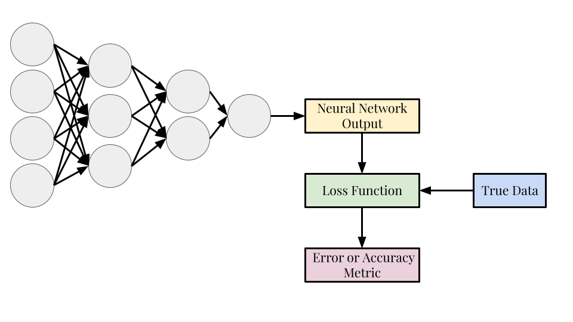
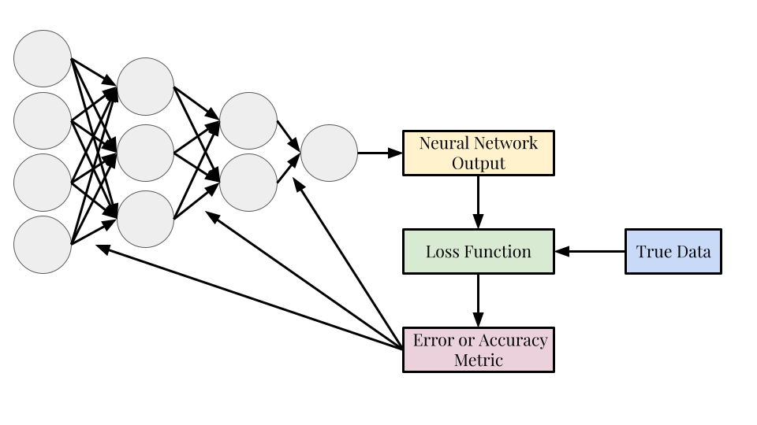

A Conceptual and Mathematical Introduction to Neural Networks#
CSC/DSC 340 Week 7 Slides (Part 1)
Author: Dr. Julie Butler
Date Created: September 26, 2023
Last Modified: September 26, 2023
Review of Material Covered So Far#
The Machine Learning Workflow#
1. Import and clean data; perform initial analysis
* Same as with other machine learning models
2. Split the data into a training set and test set
Same as with other machine learning models
3. Train your model
* A slightly more complicated and lengthy process with neural networks
4. Test your model's performance with the test data
* Same as with other machine learning models
5. Improve the model through further data refinement or hyperparameter tuning
* Hyperparameter tuning will be much more complicated with neural networks
Data Set: Iris Data Set#
Four features with three class labels (clasification problem)
##############################
## IMPORTS ##
##############################
import numpy as np
import pandas as pd
import seaborn as sns
import matplotlib.pyplot as plt
from sklearn.datasets import load_iris
# Load the iris dataset from sklearn
iris = load_iris()
# Convert the iris dataset to a pandas dataframe
iris_data = pd.DataFrame(iris.data, columns=iris.feature_names)
# Add the target variable to the dataframe
iris_data['target'] = iris.target
sns.pairplot(iris_data, hue='target')
/Users/butlerju/Library/Python/3.9/lib/python/site-packages/seaborn/axisgrid.py:118: UserWarning: The figure layout has changed to tight
self._figure.tight_layout(*args, **kwargs)
<seaborn.axisgrid.PairGrid at 0x13f18a1c0>

Linear Regression#
Output for Linear Regression:
\(\hat{y} = X\theta\)
For a four feature data set: \(\hat{y} = X_1\theta_1 + X_2\theta_2 + X_3\theta_3 + X_4\theta_4\)
The output can only be a linear combination of the inputs.
Loss Function
Mean-Squared Error: \(J(\theta) = \frac{1}{N}\sum_{i=1}^N (y_i - \hat{y}_i)^2\)
The smaller the value the closer the predictions are to the true results.
Optimized Weights/Parameters
Found by minimizing the loss function with respect to the weights
\(\theta_{Linear} = (X^TX)^{-1}X^Ty\)
Ridge Regression#
Output for Ridge Regression:
\(\hat{y} = X\theta\)
For a four feature data set: \(\hat{y} = X_1\theta_1 + X_2\theta_2 + X_3\theta_3 + X_4\theta_4\)
The output can only be a linear combination of the inputs.
Loss Function
Regularized Mean-Squared Error: \(J(\theta) = \frac{1}{N}\sum_{i=1}^N (y_i - \hat{y}_i)^2 + \alpha\sum_{i=1}^N|\theta_i|^2\)
The smaller the value the closer the predictions are to the true results.
\(\alpha\) is a hyperparameter whose value determines how regularized the algorithm is
Optimized Weights/Parameters
Found by minimizing the loss function with respect to the weights
\(\theta_{Ridge} = (X^TX-\alpha\textbf{I})^{-1}X^Ty\)
Kernel Ridge Regression#
Output for Kernel Ridge Regression:
\(\hat{y} = \sum_{i=1}^m \theta_ik(x_i,x)\)
\(x_i\) represents the m training points used to find \(\theta\)
k is the kernel function, adds nonlinearity to the system
For a data set with three training points: \(\hat{y}(x) = \theta_1k(x_1,x) + \theta_2k(x_2,x) + \theta_3k(x_3,x)\)
Choice of kernel function is a hyperparameter, each kernel function adds some hyperparameters as well
Loss Function
Regularized Mean-Squared Error: \(J(\theta) = \frac{1}{N}\sum_{i=1}^N (y_i - \hat{y}_i)^2 + \alpha\sum_{i=1}^N|\theta_i|^2\)
The smaller the value the closer the predictions are to the true results.
\(\alpha\) is a hyperparameter whose value determines how regularized the algorithm is
Optimized Weights
\(\theta_{KRR} = (K-\alpha\textbf{I})^{-1}y\)
K is a kernel matrix
All machine learning methods we have investigated so far have closed-form solutions for their weights/parameters.
Conceptual Neural Network#
Neuron/Node#
Base unit of a neural network; neural networks are made of many connected nodes
A node is just a function that takes an input, does some math, and produces an output 
Layers#
Many nodes that all receive the same inputs but are not connected to each other
The number of nodes in each layer varies and depends on the type of layer 
Input Layer#
First layer in a neural network
The number of nodes is the same as the number of features in the data set; each node is passed on of the features
Does not manipulate its inputs, simply passes them onto the next layer

Output Layer#
The last layer in the neural network, produces the output
The number of nodes is equal to the number of dimensions of the output; each node outputs one of the dimensions
Manipulates data using the mathematical formula described later in the notebook

Fully Connected#
Fully connected means that each neuron is connected to every neuron in the next layer
All networks we will look at in this course are fully connected (but this is not necessary try of all neural network architectures)
Feedforward#
Feedforward means that data moves only from the input layer in the direction of the output layer, it is never fed backward
“Regular” neural networks and convolutional neural networks are feed forward, recurrent neural networks are not
Loss Function#
The loss function determines how accurate the predictions of the neural network are and are used to find the values of the weights
Unlike the previous machine learning algorithms, the loss function is not set to be the mean-squared error function; it can be any function that determines how well the neural network has performed

Backpropagation#
Backpropagation is the process of optimizing the weights of the neural network to get a better result the next time the neural network is run
The loss function is used to update the weights of the network (represented in the diagram by the arrows)
The feedforward-loss function-backpropagation process is one “training iteration”, neural networks are trained with hundreds or thousands of training iterations

Neural Network Mathematics#
Linear Neuron (Weights and Biases)#
X is the input to the neuron
w is the weights matrix which belongs to the entire layer, each neuron has a specific column of the weights matrix
Same function as \(\theta\) in previous algorithms
b is a bias vector that corresponds to the entire layer, each neuron has a specific valye of the bias vector
Similar function to fitting the intercept in previous algorithms
Same for as linear and ridge regression \(\longrightarrow\) therefore can only give us linear results
Applies to neurons in both the hidden layers and in the output layer
Activation Function#
The activation function is applied to the entire output; gives the output some nonlinearity
Neurons in the same layer will have the same activation function, different layers can have different activation functions
A layer does not have to have an activation function (common for output layer)
Common activation functions:
Sigmoid: \(f(x) = \frac{1}{1+e^{-x}}\)
Hyperbolic Tangent: \(f(x) = tanh(x)\)
Rectified Linear Unit (ReLU): \(f(x) = max(0,x)\)
Mathematics for Loss Functions#
The loss function is what determines how closely the output of the neural network matches the true (or expected results). In the algorithms we have looked at previously, the loss function was always some form of the mean-squared error function, but in neural networks, the loss function can be any function that determines how good the results of the neural network are. Thus, for neural networks, the loss function is an additional hyperparameter that the user has to set. There are many common loss functions that are used for both regression and classification problems and you can also create custom loss functions.
Regression Loss Functions#
The most common loss function to use with regression problems is the mean-squared error: $\(J(\theta) = \frac{1}{N}\sum_{i=1}^N (y_i-\hat{y}_i)^2,\)\( but the mean absolute error is also common: \)\(J(\theta) = \frac{1}{N}\sum_{i=1}^N|y_i-\hat{y}_i|\)$
Classification Loss Functions#
For classification the loss functions are different, reflecting the probability the neural network got the classification correct. For a binary classification problem, the most common lost function will be the binary cross-entropy which is defined as:
where \(p_i\) is the probability that the point belongs to the first category.
For multiclass classification, the analogous loss function is the categorical cross-entropy, which is defined as:
where i is a sum over all points and j is a sum over all categories.
The probability a point belongs to each category can be extracted from most neural network implementations.
Backpropagation and Optimization#
Backpropagation is the process of using the loss function results to update the weights and biases of the neural network
Updates the weights/biases of the output layer, then the last hidden layer, and back through the network until the first hidden layer
Many different optimizers are used here and neural network optimization is a popular research topic in the field of machine learning
Choice of Optimizer#
The choice of optimizer becomes a hyperparameter for neural networks
The simplest optimizer is gradient descent: $\( \theta_i = \theta_i + l_r\frac{\partial J(\theta)}{\theta_i}\)$
\(\theta_i\) is either a weight or bias
The most common modern optimizer is called Adam and is much more complicated
Learning Rate#
A floating point number (usually less than 1) that controls how much the weights and biases will change with each iteration
Too large and the optimal values may be overshot and too small means there will be very little change between iterations and the training process will be extended
Analogous to the strength of the regularization (\(\alpha\)) in ridge regression and kernel ridge regression
Neural Network Hyperparameters#
Neural networks have an extensive number of hyperparameters that need to be set by the user before the algorithm is run and this makes using neural networks a complicated and time-consuming process.
Hyperparameter tuning here becomes even more important than in previous algorithms but is also much more time-consuming due to the increased number of parameters and choices for each parameter.
Loss and Activation Functions#
The choice of loss function and activation functions are both hyperparameters
Though the loss function is a hyperparameter it is usually not tuned (it can be though)
The activation function needs to be chosen per hidden layer and for the output layer and does not have to be the same function for the entire network
No activation function is also an option on a neural network layer and is common for the output layer for regression problems so the output is not constrained by the range of the
Architecture (Neurons and Layers)#
The architecture of a neural network refers to the number of hidden layers and the number of neurons per hidden layer
Also known as the width and depth of the neural network
The number of hidden layers and the number of neurons in each hidden layer are hyperparameters
The number of neurons in each hidden layer does not have to be the same
The more hidden layers a network has the more of a chance it has to process the data and extract patterns
The more neurons in a hidden layer corresponds to a larger weight matrix and more of a chance to create meaningful combinations of the data
BUT a larger network takes longer to train and eventually adding more layers and neurons can be detrimental to the performance
Learning Rate and Optimizer#
Both the learning rate and the optimizer are hyperparameters that have to be set before the network is trained
Here Adam is the most common value for the optimizer but the learning rate could be tuned to increase performance
Number of Training Iterations#
The number of feedforward-loss function-backpropagation cycles (training iterations) is also a hyperparameter and the number of iterations can lead to losses in the accuracy of the neural network if it’s too low or too high (discussed later in this notebook)
Others#
There are other hyperparameters you can investigate as well including “dropout”, “regularization”, “early stopping”, and others
You are unlikely to encounter tuning these in this course unless you are curious about using them to improve the performance of your models for the final project